Teststeps
There are several teststeps available whick you can create from the teststep list
Overview
This overview helps you navigate on this page and understand the features of each teststep:
HTTP Teststep
An HTTP Teststep allows you to send a HTTP request for several HTTP methods such as GET, POST and PUT. Additionally, you may send JSON or XML in the HTTP-Body. See more in HTTP Teststep View
HTML Teststep
An HTML teststep loads a website and displays the contents in a browser window. This is helpful, when you test web services postprocesing. You may visually check the website content or create a list of Javascript-based assertions on the webpage. See more in HTML Teststep View
SOAP Teststep
A SOAP Teststep is a WSDL-aware teststep that reference a specific webservice method. You have request and response area with various that help you manage the complexity of SOAP-XML data models based on WSDL-XSD-Schema definition. See more in SOAP Teststep View
Randomize Teststep
A Randomize Teststep defines rules or data to randomize your request input. This is a common strategy in testing to have variants of you request to make sure you'll find gaps in the implementation. A common pitfall in webservice testing is to rely on a small set of regression tests with a static set of input data. The Randomize Teststep includes a list of Random Value Providers to serve random data, like random strings and random locations. See more in Randomize Teststep View. See the tutorial Create a Randomize Teststep with a Random Value Provider to learn how to this teststep to create a random Vehicle Identifier Number.
Randomized Valuelist Teststep
A Randomize Teststep reads a CSV-file to randomize your request input. The intention is the same as with the Randomize Teststeps except that the randomized data must fit together. See more in Randomized Valuelist Teststep View. See the tutorial Create a Manual RandomizedValuelist Teststep in case you have not yet worked with this teststep type.
Manual Randomized Valuelist Teststep
A Randomize Teststep reads a CSV-file to randomize your request input. The intention is the same as with the Randomize Teststeps except that the randomized data must fit together. See more in Manual Randomized Valuelist Teststep
HTML Teststep View
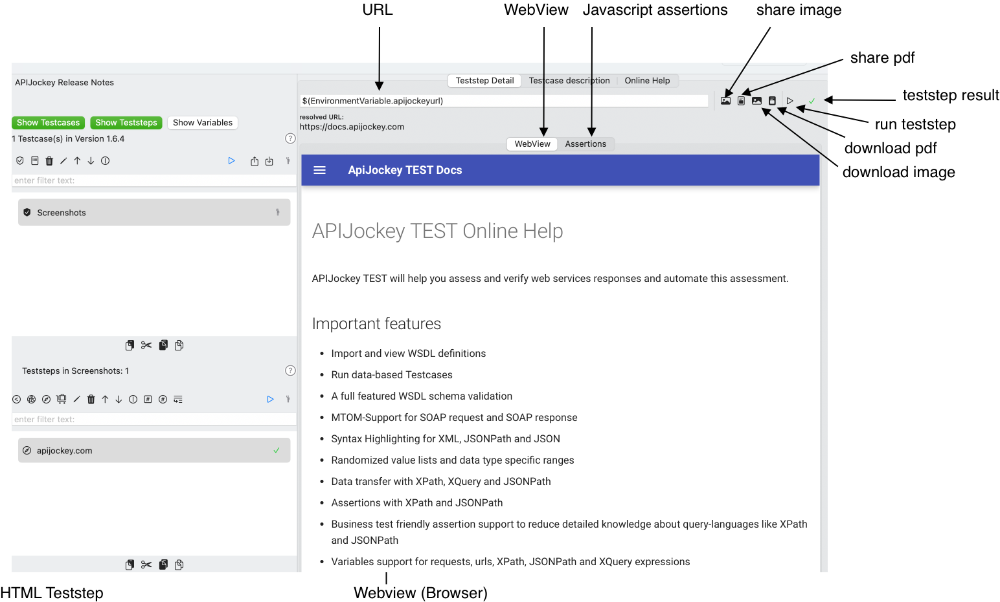
Overview
An HTML teststep is a regular teststep in the teststep list. You need to provide an URL to load. The URL can be static or a variable value, as with SOAP teststeps or HTTP teststeps. You see an EnvironmentVariable In the address line of the WebView in above screenshot and a selected RunEnvironment APIStaging,
- tab WebView contains the browser window with the content as it would appear in a Web browser like Safari
- tab Assertions holds the javascript assertions to verify the expected content of the HTML content.
- action share image creates an image of the webview content and lets you share it using the systems' sharing options
- action share pdf creates a PDF document of the webview content and lets you share it using the systems'sharing options
- action download image creates an image of the webview content and opens your default viewer for images
- action download pdf creates a PDF document of the webview content and opens your default viewer for PDF documents
- run teststep reloads the page and reevaluates the assertions
- teststep result includes successful loading of the URL and the result of the assertions.
HTML Javascript Assertion
The screenshot below shows you a list of assertions for the current HTML teststep with one selected to show a sample assertion with expected return value.
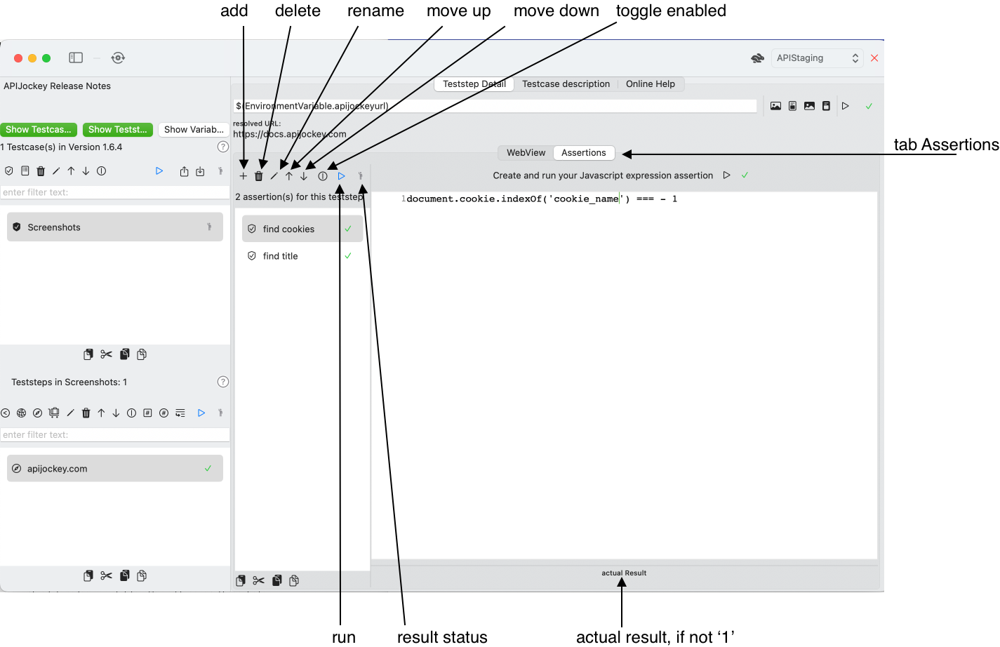 An assertion must return a true (=1) value to be successful.
- add a new assertion
- delete selected assertions
- rename a selected assertion
- move up selected assertions
- move down selected assertions
- toggle enabled enables or disables selected assertions
- run selected assertion in the list order
- result status displays the result for the current run (selection)
HTTP Teststep View
An HTTP Teststep allows you to send a HTTP request for several HTTP methods such as GET, POST and PUT. Additionally, you may send JSON in the HTTP-Body.
See Create HTTP Teststep, to add a new HTTP Teststep for a testcase
The screenshot contain sample URLs from the ITunes store, provided on iTunes Search API Documentation Archive
Please don't understand these screenshots as any kind of endorsement from Apple® for this software.
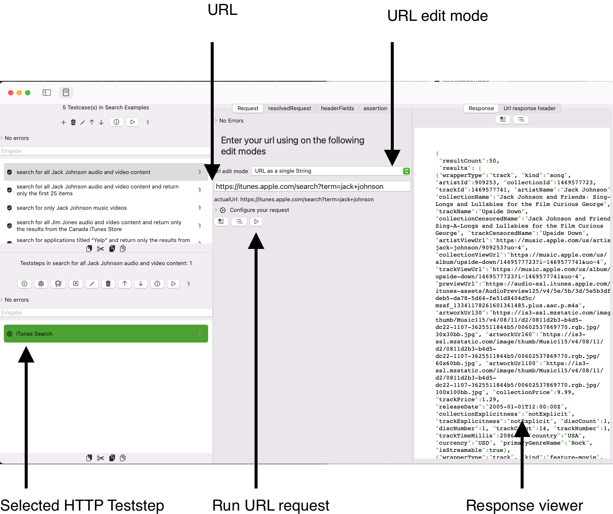
Request overview
The Request editor provides four tabs, we will cover these in the order they appear on the screen.
Request (Tab)
-
URL: Enter the URL that you want to test against.
-
URL edit mode: There are three url edit modes available. We will cover these below
-
Selected HTTP Teststep The HTTP Teststep editor appears, when you select an HTTP Teststep in the teststep list
-
Run URL request Press this button to send yor URL request to the URL
-
Response viewer: This viewer displays the JSON content and may be empty, if no content is returned from the server.
-
URL edit mode
There are three url edit modes:
- URL as a single String:
You enter the full url including host, port, route and query parameters, this is the default
-
URL with separate list of query parameters: You have separate input fields for schema, host, port, route and an editable list of query parameters
-
URL with separate list for route parameters and query parameters: You have separate input fields for schema, host, port and editable lists of route parameters and query parameters
Configure your request
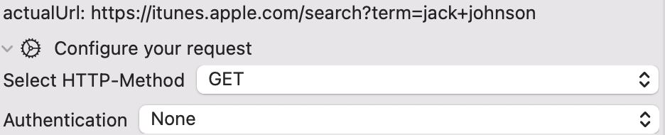
The HTTP teststep configuration allows you the select the HTTP method and the authentication method (none, basic authentication and bearer authentication).
Supported HTTP methods
- GET
- POST
- PUT
- DELETE
- HEAD
- PATCH
Supported MIME content types for POST and PUT
- application/json
- text/xml
- application/soap+xml
resolvedRequest (Tab)
This viewer show the request with resolved variable values
Header fields
This view displays the HTTP headers used for the URL request. You may create your custom set of HTTP headers for test reasons.
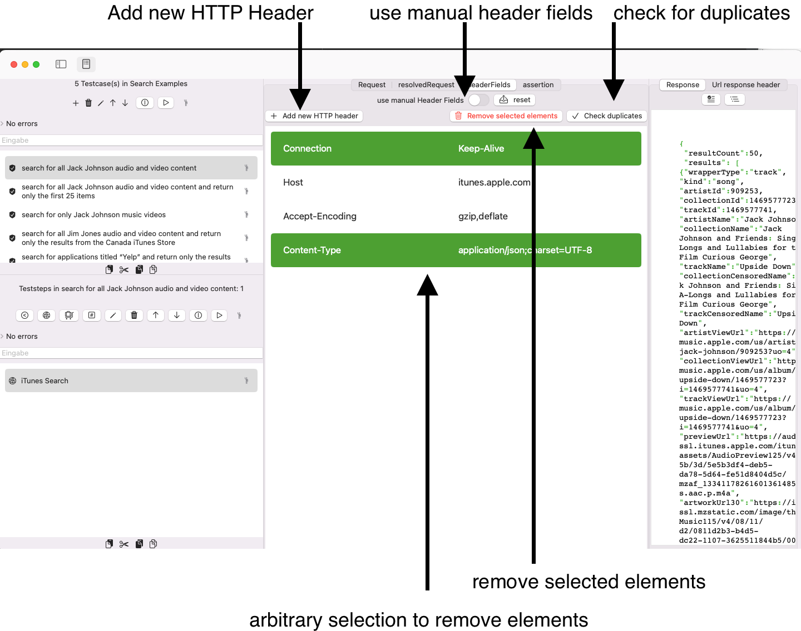
-
use manual header fields: Set the toggle to true, to override the automatic header field configuration.
-
Add new HTTP Header: Creates a new header. There is no automatic check for duplicate names, use the Button check for duplicates to perform this check.
-
check for duplicates: Header fields names must be unique, If you use manual header fields, press this button to check for duplicates
-
arbitrary selection to remove elements: You can select arbitrary elements to remove these.
-
remove selected elements: Press this button to remove the selected elements. This has only an effect, if you use manual headers.
assertions
The assertion list view is described here: HTTP Teststep assertion list
SOAP Teststep View
A SOAP Teststep is a WSDL-aware Teststep that reference a specific webservice method. You have request and response area with various that help you manage the complexity of SOAP-XML data models based on WSDL-XSD-Schema definition. Run your SOAP request and verify the response. You can view the HTTP header fields for request and response. A Soap Teststep is created based on a WSDL operation either for a SOAP 1.1 or SOAP 1.2 WsdlService Port 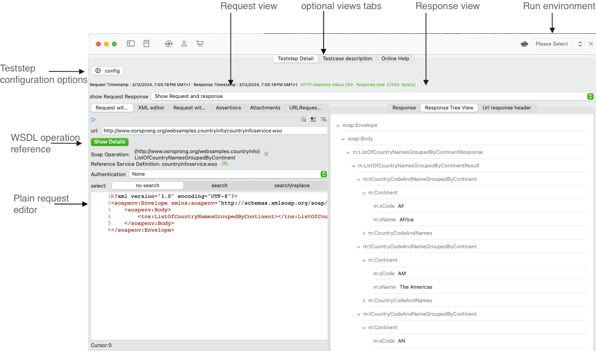
Overview
The SOAP Teststep View provides a number of sub views and configuration options.
- Teststep configuration options that effects request and response handling.
- A Request view with a number of views that shows request information
- A Response view with a number of views that show response information
Teststep configuration options
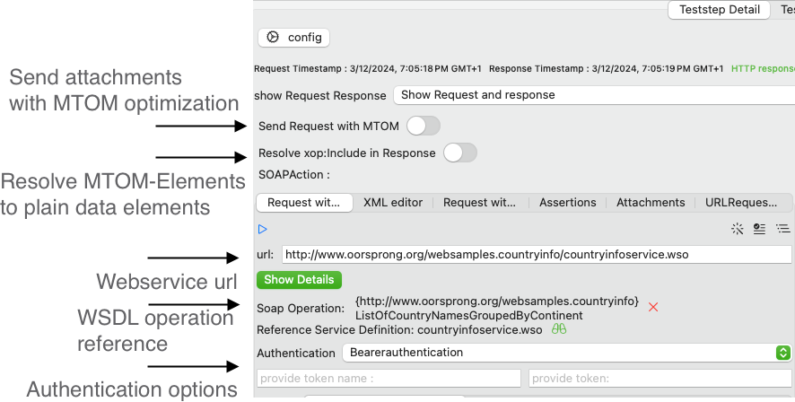
Teststep configuration view
-
Send Request with MTOM will transform your request in the required MTOM request format and replace all occurrences of elements of type {http://www.w3.org/2005/05/xmlmime} base64Binary with the {http://www.w3.org/2004/08/xop/include }Include. It will apply all required transformations to create a valid MTOM optimized request.
-
Resolve XOP:include in Response transforms an MTOM-optimized response to a response without optimizations. It will inline the SOAPAttachment data and transform all occurrences of {http://www.w3.org/2004/08/xop/include }Include with {http://www.w3.org/2005/05/xmlmime} base64Binary
- Webservice url is required to send the request to the webservice endpoint under test. If you choose to use View Environment and have configured the webservice urls for this WSDL and the selected Run Environment, the url becomes non-editable. If no authentication is selected the HTTP header autorization is omitted otherwise sent with the base64 encoded string of username for basic authentication and password for basic authentication as displayed in preview base64 encoded authentication string.
- WSDL operation reference is a required setting for a SOAP Teststep. APIJockey TEST uses the WSDL-definitions to validate the request and the response. It allows for using MTOM-optimized requests as described above. When you click on the binocular button, you will get a dialog with a list of WSDL definitions with their SOAP 1.1. and SOAP 1.2 operations.
- Authentication options include no authentication, basic authentication with username and password and bearer authentication with bearer token in a free to define http header.
SOAP Request editor overview
The request view contains several tabs to display different information
- Request with variables your XML editor with syntax highlighting
- XML editor is a visual tree-like editor that allows you to edit XML elements with text content and select variables.
- Request with variable values resolved. Viewer that resolves values of Variables
- Assertions based on simplified XPath that assert occurrences of specified elements. Details see below
- Attachments allow for selection and preview of documents that you want to send with your request.
- URLRequest Details displays the HTTP headers used to create the request.
Tab Request with variables
-
Run Teststep will send the request to the specified URL, wait for the response and run all assertions against the response.
-
Request editor is your Syntax-Highlighting editor to work on your request
-
Create new request from WSDL operation will delete your current request and create a new one based on the current WSDL operation information.
-
Validate request will validate against the WSDL operation information and displays errors in case of non-conformance with this specification.
-
Pretty print XML does indents and create newlines for each element.
You enter your request in this syntax highlighting XML editor. Variables are colored to make them easy to distinguish, see Variables
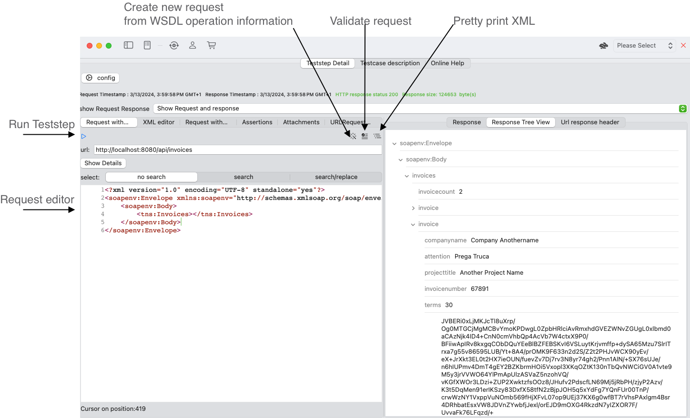
XML editor
The XML editor provides an additional edit option, with focus on XML elements that have text content and where the structure does not need to be changed. This is often the case for existing requests where values only need to be variable-ized or just changed.
NOTE: Press the ENTER key when editing is done to update the underlying xml.
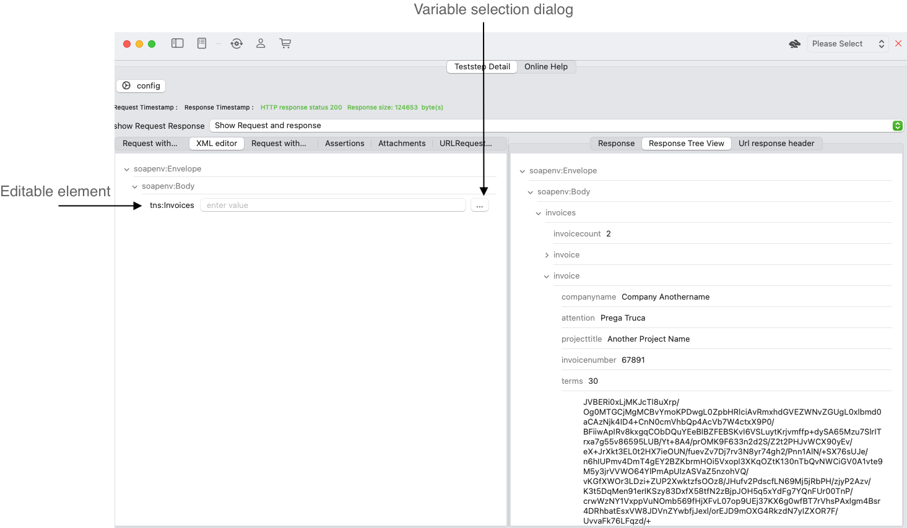
Request with variable values resolved
When you use variables, see Variables their name/value will be represented as follows:
- tab Request with Variables as a highlighted variable identifier
- tab XML editor no highlighting of the variable identifier
- tab Request with Variables resolved with the current variable value, Attachment references are NOT resolved
When you switch from your request editor to this tab, APIJockey TEST will reevaluate the variables and resolve these as it does when sending the request. Bear in mind that this is only a viewer.
Randomize Teststep View
A Randomize Teststep defines rules or data to randomize your request input. It holds a list of Random Value Providers of two types of random data
- String Random Value Provider and
- Location Random Value Provider
The screenshot below shows a Randomize Teststep with two Random Value Providers of each of these types. You can have an arbitrary number of Random Value Providers in this teststep. 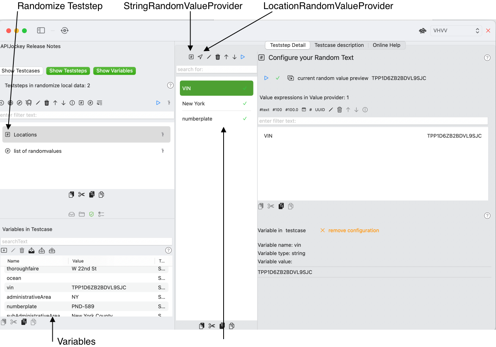
You see a RandomizeTeststep Locations selected in the Teststep list view. The teststep holds three RandomValueProviders, two StringRandomValueProviders (VIN, numberplate) and one LocationRandomValueProvider (New York). The RandomValueProviders vend their random values through variables, which can be accessed within requests and assertions.
String Random Value Provider
A StringRandomValueProvider defines a list of rules (StringRandomValueExpression) to create random strings.
String Random Value Provider configuration
You can create an arbitrary number of random expression values which are simply concatenated from top to bottom.
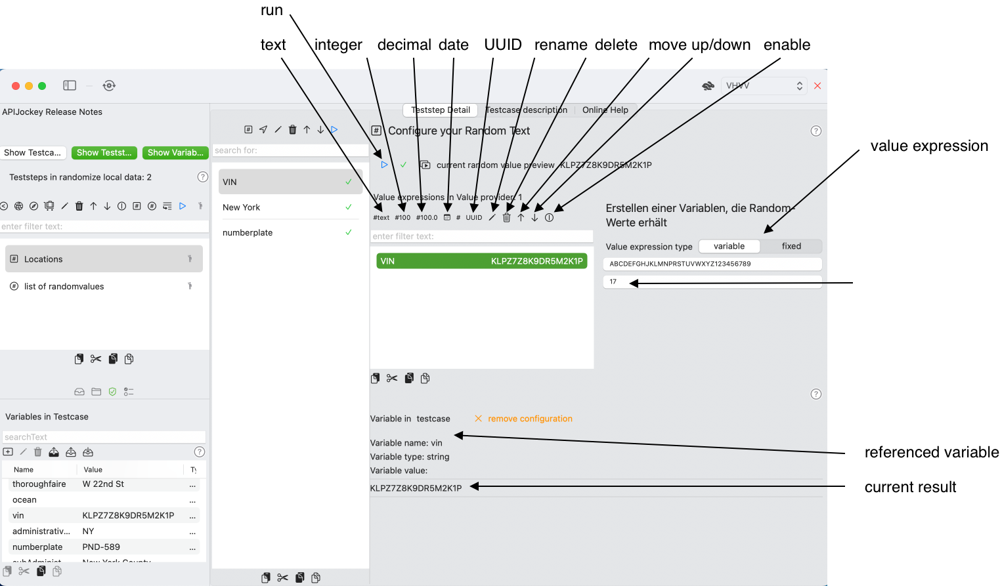
- text adds a new string-based random expression value. You configure the characters to include and the text length. In case you need a fixed value to occur at a specific position, switch the value expression type from variable to fixed.
- integer adds a new integer-based random expression value. You configure the min and max value and the formatting options.
- decimal adds a new decimal-based random expression value, you configure the min and max value and the formatting options.
- date adds a new calendar-based random expression value, you configure the earlist and latest allowed dates and the formattions options.
- uuid adds a new UUID value provider.
- rename your selected random value expression
- delete your selected random value expressions
- move up/down your selected random value expressions to change occurence in your final string
- enable/disable your selected random value expressions
- run evaluates your expressions and displays the current result. When a referenced variable is configured, the variable will hold the value for further use in requests and assertions.
Example StringRandomValueProvider
The VIN random text consists of a single StringRandomValueExpresion, which you can create with the text button. The number plate random text is more elaborate and shows the concatenation of three string random value expressions:
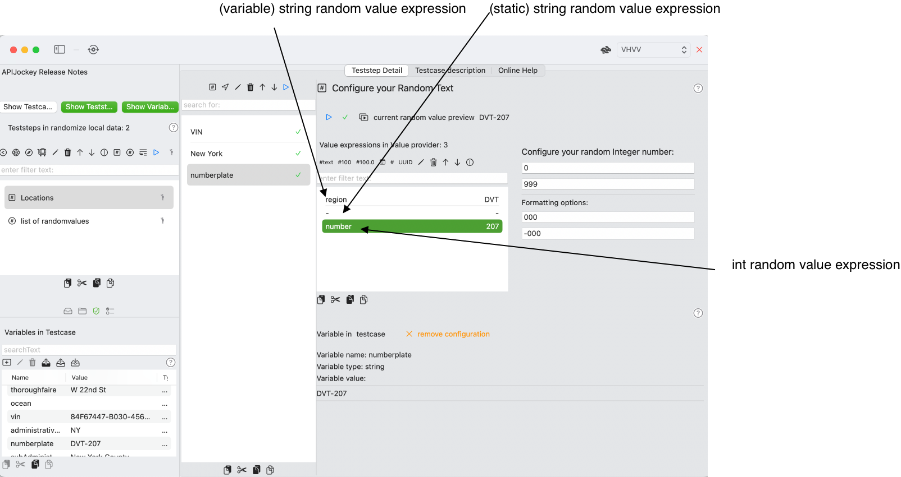
Location Random Value Provider
A location random value Provider provides you with a random adddress and geolocation coordinates from within a specified region. In the example screenshot below we have chosen an area in New York, specifically parts of Lower Manhatten/New Jersey and Brooklyn to get random location data:
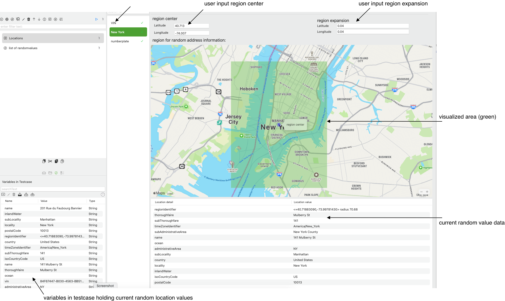
A Location Random Value Provider vends a set of data among which are: - geolocation coordinates - country - timezone - street / number - postal code - place - administrative area data
Each of these fields can be accessed by a separate variable.
Teststep Assertions
Testing webservices can become repetitive and cumbersome. Assertions help you to automate checks and free you from repetitive error-prone verifications. You will find more time to further explore responses and find unexpected behaviour. Assertions have their own tab in the SOAP Request view and allow you for editing assertions while viewing the Response.
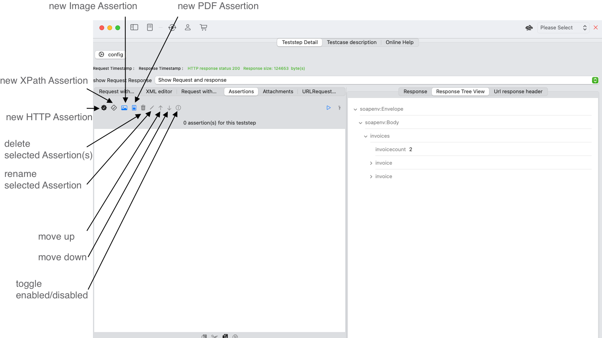
APIJockey TEST supports the following assertions types
-
create a new XPath Assertion to verify the SOAP Response with an XPath expresssion. APIJockey TEST will support you with a visual editor to enter the XPath and to define the type of verification. See XPath Assertion editor.
-
create a new HTTP Assertion HTTP Status, response time and data length, see HTTP Assertion editor
-
create a new Image Assertion will create an AI-based Assertion that will assess Text and Barcode information from your image. Note: PDF-Documents are also considered images in this Assertion type.See Image Assertion editor
-
create a new PDF Assertion will create a PDF Assertion that will assess Text and document property information from your PDF-Document. Note: Sometimes PDF-Documents contain images, only and no text will be found. See PDF Assertion editor. In this case, you will need to use the Image Assertion type.
Attachments
Attachments are used in both requests and responses.
URL request header
This tab displays the HTTP header used with the last URL request and may be empty if no request has been sent after (re-)starting APIJockey TEST.
View DatatransferTeststep
A Datatransfer teststep allows you to query results from SOAP teststeps (request and response) and store them in a variable. This is helpful in cases where you need to establish a set of requests where the input of a request is part of the response of the previous teststep..
Overview
When you create and select Datatransfer Teststep in the Teststep list view, the following editor appears.
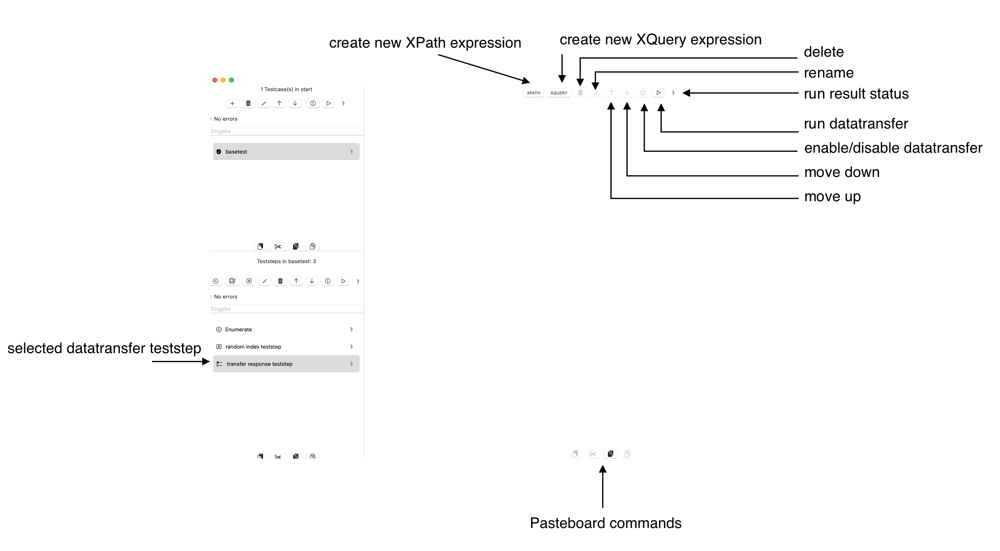
-
create new XPath expression opens a dialog to create an xpath expression to query data from a previous teststep (request or response) in this testcase..
-
create new XQuery expression opens a dialog to create an xpath expression to query data from a previous teststep (request or response) in this testcase. Note that you will use XPath in XQuery as well, so depending on your use case, XQuery may be the choice..
-
delete the selected datatransfers
-
rename the selected datatransfer
-
run datatransfer needs a referenced variable. See VariableValueTransfer for details
-
run result status displays the test run result status of an individual teststep.
-
enable/disable includes or excludes a datatransfer on a test run
-
move up and move down has impact on the list order and on the order they are invoked for test runs. As the datatransfers query teststep request and response they cannot have dependencies on each other. The order is intendedfor your organization, only.
-
Documentation of the pasteboard commands
Walkthrough to create an XPath datatransfer
We will create an XPath datatransfer (value provider) with a namespace-aware XPath expression. Be aware that we will use the request for this XPath expression. In general, you may use the response for your query. To make this work, you need to walk through our getting started tutorial. Once you are done, you need to change the request as follows: We will query the value of msg:Element and store it in a testcase variable
<div>
<pre>
<?xml version="1.0" encoding="UTF-8" standalone="yes"?>
<soapenv:Envelope xmlns:soapenv="http://schemas.xmlsoap.org/soap/envelope/">
<soapenv:Header></soapenv:Header>
<soapenv:Body>
<msg:Enumerate xmlns:msg="http://schemas.xmlsoap.org/ws/2004/09/enumeration">
<!-- continue here -->
<msg:Element>USD</msg:Element>
</msg:Enumerate>
</soapenv:Body>
</soapenv:Envelope>
</pre>
</div>
*>
Input configuration
Click with your mouse on the button create new XPath expression. This will open a dialog. Enter the name currency and confirm with ok. You will see the new datatransfer value provider in the list.
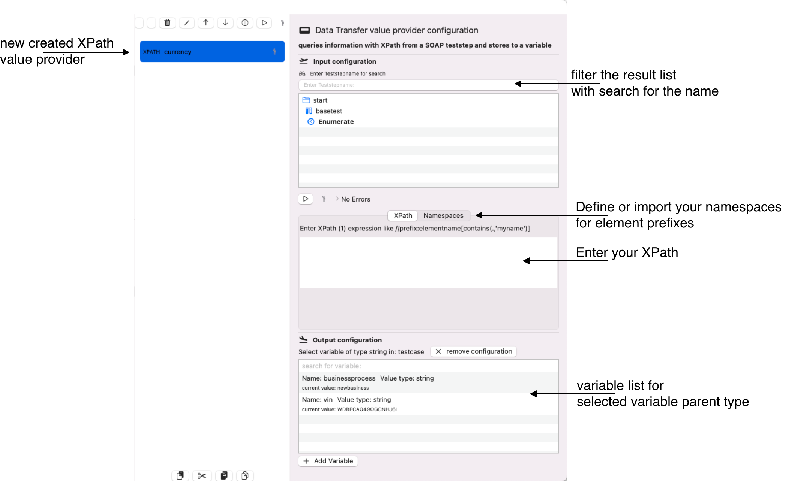
Click with your mouse on the teststep Enumerate. This will link the teststep with the value provider and display the following view:
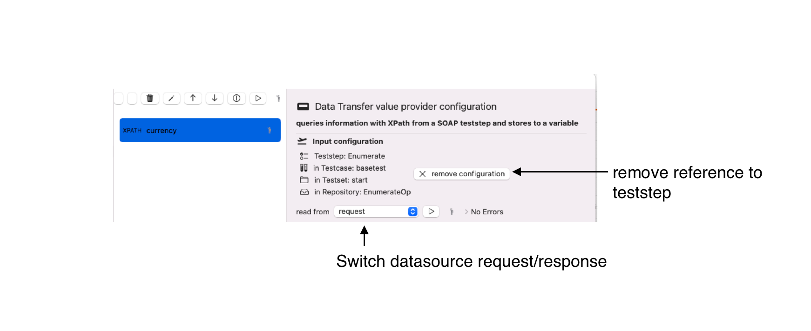
-
You may remove the current teststep reference with the button remove configuration.
-
read from You may switch to request/response of the referenced teststep to query data, default is response.
We need to reference the request for our walkthrough. For this reason the screenshot displays the value request after change from the default as the input type of the value provider. We enter a simple, namespace aware XPath-Expression. //msg:Element/text() Now, we run this XPath expression and will get an error message
Click with your mouse on the button run XPath value provider This will show an error message.
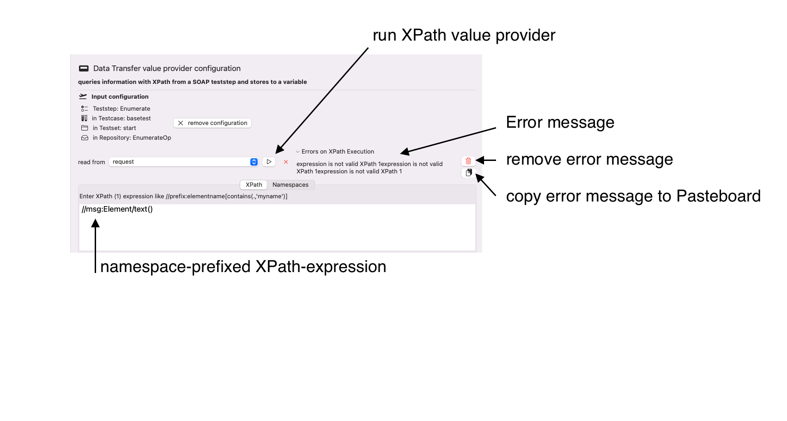
The reason for the error message is an unsatisfied mapping from the prefix to the namespace. This can be resolved very easily. Click on the button remove error message as we don't need this error message.
Switch to to the tab Namspaces and click with your mouse on the button preset namespaces from input teststep
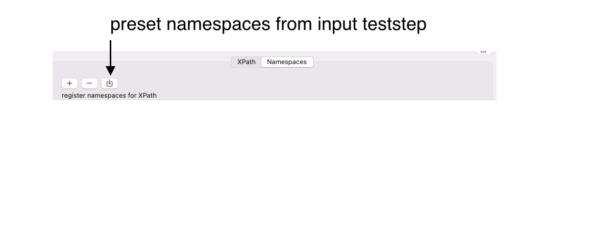
This will load the namespaced defined in the input XML (request) with the prefixes used in the XML. 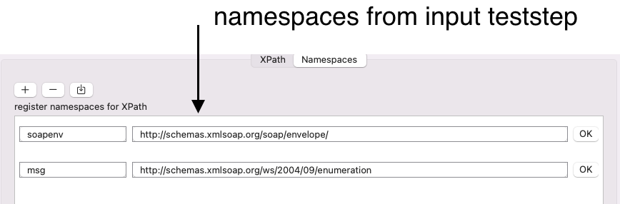
You may run the XPath expression again, and will get error message that no variable has been loaded.
Create your own testcase variable currency. In case you're uncertain, how to proceed, see Create a VariableValueTransfer. Then run the value provider again. The result should be as follows:
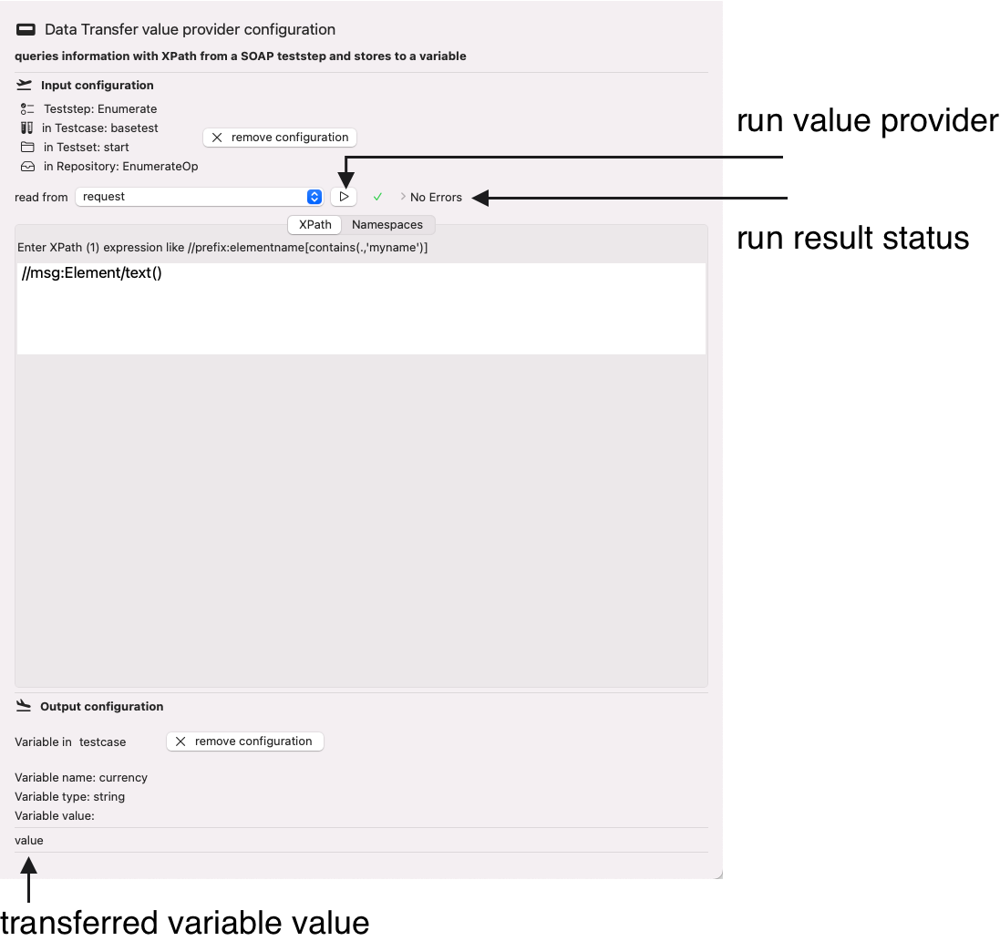
View Randomizeteststep
This teststep editor lets you manage a list of random value providers based on String, Integer, Double, Date and UUID data types.
Discussion
A Randomizeteststep supports a list of random values that store their values in variables. When you select a Randomizeteststep. you will see an empty editor, as in the screenshot below. A random value provider creates a Text/String based on a list of individual value sub elements from different data types. It is a powerful randomizing utility, and you may need to get used it. The fact that no coding is necessary may make this one of your favorite tools to randomize you requests.
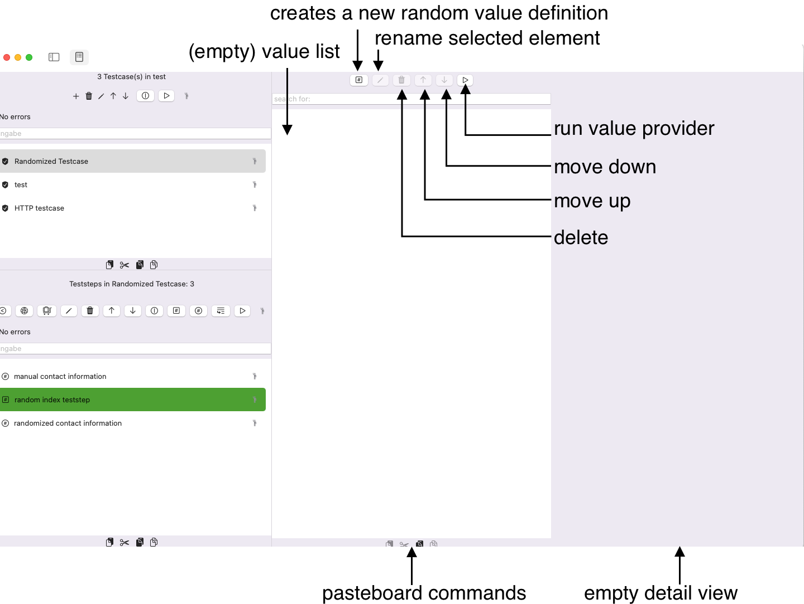
Commands
- create new random value creates a new random value provider.
- rename selected element
- delete all selected elements
- move up and move down has impact on the list order and on the order they are invoked for test runs. The order is intended to define which teststep needs the input of another teststep.
- run value provider list regenerates new random values for all selected elements in the displayed order, or all elements, when no element is selected.
- Documentation of the pasteboard commands
RandomValueProviders
A RandomizeTeststep includes an (initially empty) list of RandomValueProviders
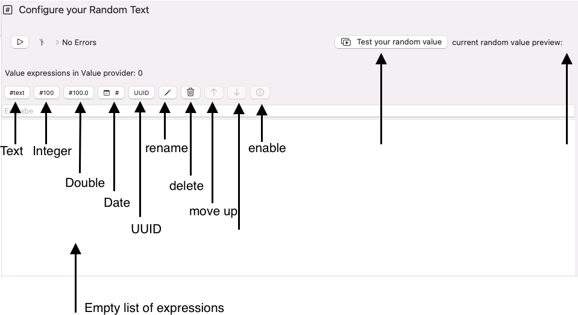
When you need to provide several independent random values at a certain point in your teststep order, you would need a list of RandomValueProvider. depending on your underlying data type, you have to choose between:
- Text: Creates an expression value with arbitrary characters in a specified length
- Integer: Creates an expression value between a lower range and an upper range in a specified formatting
- Double: Creates an expression value between a lower range and an upper range in a specified formatting
- Date: Creates an expression value between a lower range and an upper range in a specified formatting
- UUID: Creates a UUID
- rename: opens a dialog to rename a selected element
- delete: deletes the selection
- move up: moves the selection up in the list
- move down: moves the selection down in the list
- enable: enables/disables the selection
- run expressions: The RandomValueProvider returns a concatenation of the expressions from top to down as one result.
Text Randomvalue expression
n Use this type if you want to create a text with arbitrary characters that may occur in a fixed length value. (/storage/RandomizeTeststep-VariableTextExpression.png" alt="screenshot RandomizeTeststep variable text expression"/>
- current random value displays the result of the random value generation.
- text length defines, how long the text should be. Each character can be one of included characters.
- This behaviour is applied, when you choose the value expression type variable random text
A text random value expression may be part of a list of expression. Part of this concatenated text may be a fix character string, e.g. the first three characters must be ABC

Integer RandomValueExpression
Use this, if you want to provide an integer random value between a lower and an upper range with or without formatting.
 Usage instructions
Usage instructions
- define the included lower range
- define the excluded upper range
- set the formatting for positive numbers
- set the formatting for negative numbers. It might be the case that you want to return a negative number as its absolute value
Double RandomValueExpression
Use this, if you want to provide a random double value between a lower and an upper range with or without formatting.
 Usage instructions
Usage instructions
- define the included lower range
- define the excluded upper range
- set the formatting for positive numbers. This may include special characters as a currency indicator.
- set the formatting for negative numbers.
Date RandomValueExpression
Use this, if you want to provide a random formatted date between a lower and an upper range with or without formatting.
Usage instructions
- set the first possible date
- set the last possible date (excluded)
- set the mandatory formatting.
UUID RandomValueExpression
Use this, if you need a unique identifier, e.g. to have a trace in your logging system.
VariableValueTransfer
Once you have set up the RandomValueProvider, you will need to define the VariableValueTransfer
Manual RandomizedvaluelistTeststep View
A Manual Randomizedvaluelist teststep takes a list of columns with equal number of row and provides randomized values from this table in variables that can be used in following teststeps. The purpose is to permute data to a maximum. This helps to test efficiently webservices with a varying (even small) set of test data. A small number of data can thus provide more combinations when repeating a test. Repeating testcases without data variations has only limited benefits. You would not test thoroughly, and test all combinations of testcases is an endeavour that only few testers will continue to perform in the sense of regression testing. See Create a RandomizedValuelist Teststep to add this teststep.
Overview of the configuration options
Manual Randomized Valuelist Teststep overview
The view contains three main parts
- Column editor (blue bordered area)
- Variables transfer (red bordered area)
- Editable table
The teststep configuration foresees the following elements:
Manual Randomizedvaluelist Teststep view details
Column editor view
You maintain a list of columns for your editable tables. The current columns are displayed as a list with configuration information
- add column creates a new column. This will create empty contents for existing rows and a testcase variable that is referencing this column.
- Enable column(s): A column value is transferred to a variable only, if the column is enabled. You may exclude (ignore) columns in a CSV file. That way you don't need to modify the CSV file itself. All selected columns are enabled independent of their current state.
- Disable column(s): The selected columns are disabled. No value will be transferred to the connected variable. IF there is a value in the variable e.g. due to manual editing or previous runs, this value will remain. You may optionally remove the variable. A column that is disabled has the platform specific secondary color, in general this is grey instead of dark black text color, both in the column list and the Value list preview on the right side.
- display column(s): A column can be displayed and not displayed in the preview. This may help you to focus on specific columns during editing. This has impact on the actual transferral on variables. A column that is shown has a different Icon that one that is not displayed.
- Hide column(s): Removes all selected columns from the preview, You may focus on a single column or any subset of columns that you want to inspect and/or format.
- rename column will rename the current column in the table.
- delete column removes all selected columns from existing rows.
(Show) Output view (Variables' transfer configuration)
This is explained in full detail in Output view (Variables' transfer configuration) in Randomizedvaluelist Teststep.
Editable table
This editable table displays all shown columns. No further formatting applies. The following screenshot shows:
- two defined columns (first name, last name
- add single row will add a single row for all columns
- add number of rows will show a dialog where you enter the number of rows and create the number of rows
- delete selected row(s)will delete the selected rows without further warning!
- table rows show only columns with diplay equals true (see Column editor view)
Randomized Valuelist Teststep View
A Randomized Valuelist Teststep takes a table of values (CSV-File technically) and provides randomized values from this table in variables that can be used in web service requests. The purpose is to permutate request data to a maximum. This helps to test efficiently webservices with a varying (even small) set of test data. A small number of data can thus provide more combinations when repeating a test. Repeating testcase without variation has only limited benefits. You would not test thoroughly and test all combinations of testcases is an endeavour that only few testers will continue to perform in the sense of regression testing. See Create a RandomizedValuelist Teststep to add a new RandomizedValuelist Teststep for a testcase.
Overview of the configuration options
The teststep configuration foresees the following elements:
- enable/disable columns
- randomizing on a row base or randomizing for each column
- show/hide columns
- configure the output variables (name / parent element)
The following example displays favorite U.S. first and common last names, together with a combination of some postal codes and states. The premise is to combine first and last names randomly and keep a given postal code and state combination. We would use two Randomizedvaluelist teststeps to perform this task.
Randomizedvaluelist Teststep view details
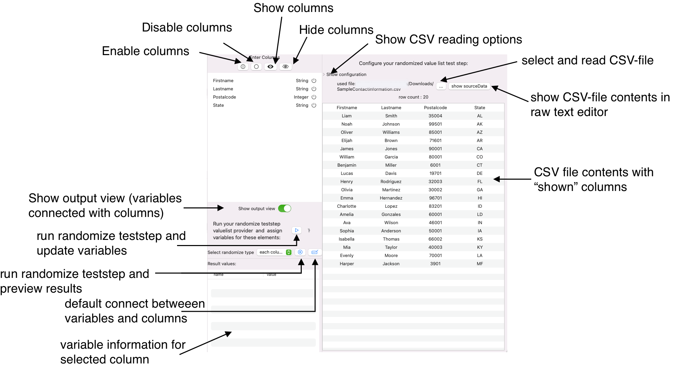
The view contains three main parts
- Column editor (upper left) and column formatting
- Variables transfer (lower left)
- Formatted value list preview (table view on the right)
Column editor view
A CSV file is interpreted as a list of rows consisting of equal columns. You may have been provided with a file and may configure the columns that you want to use and foresee further formatting
- Enable columns: A column value is transferred to a variable only, if the column is enabled. You may exclude (ignore) columns in a CSV file. That way you don't need to modify the CSV file itself. All selected columns are enabled independent of their current state.
- Disable columns: The selected columns are disabled. No value will be transferred to the connected variable. IF there is a value in the variable e.g. due to manual editing or previous runs, this value will remain. You may optionally remove the variable. A column that is disabled has the platform specific secondary color, in general this is grey instead of dark black text color, both in the column list and the Value list preview on the right side.
- Show columns: A column can be displayed and not displayed in the preview. This may help you to focus on specific columns during editing. This has impact on the actual transferral on variables. A column that is shown has a different Icon that one that is not displayed.
- Hide columns: Removes all selected columns from the preview, You may focus on a single column or any subset of columns that you want to inspect and/or format.
Formatting
The formatting view is visible when you select a single column in the column editor view. The formatting options depend on the underlying type that was identified during the process of reading the CSV file.
- String values
- Numbers (Integers, Double, Float)
- Dates
String values can be any text, boolean values or dates in text representations that are not recognized. While booleans can be easily interpreted by changing the reading options> the text representation of dates may vary for each column. Therefore, you may choose to redefine a column value type from string to date and apply formatting for the data when transferred to a variable: Numbers (Integers, Double, Float) are in general easy to interpret, Here you can apply a number formatting for positive and negative values: Dates are identified if they follow the ISO 8601 string representation. If the CSV file holds dates with a different date format, you may still process them by applying the Treat as Date flag.
Output view (Variables' transfer configuration)
A randomized value list foresees a variable transfer for each column that is enabled. The variables can be connected to the testcase, parent teststep or parent repository. You will only be able to run the teststep successfully, when you have created and connected variables to each individual columns. This can be done with a single click and repeated whenever required.
- Show output view (variables connected with columns): shows or hides the entire view. Once the configuration is done you may hide this view.
- run randomize teststep and update variables: This command is equal to the run command in the teststep list view. It provides a randomized value for each column and updates the referenced variable.
- select randomize typeYou may want to randomize columns independently or row-based. In our example file, you may want to randomize first names and last names independently. You may want to keep the columns postal code and state together. In This case you would work with two teststeps referring the same CSV file.
- run randomize teststep and preview results: This command can be run without referenced variables. It displays the randomized values for all enabled columns with their respective formatting.
- default connect between variables and columns: Each column must be assigned a variable in order for the randomized value to be transferred. This command would create a variable for each enabledcolumn. When you click this button again, the existing variables will be deleted and replaced by a new set of variables.
You may change the variables reference in the.
Manual configuration of the variables' transfer
When you select a single line in the output view, the view is split in two vertical sections. The output view shrinks horizontally and provides the option to edit the variables transfer reference.
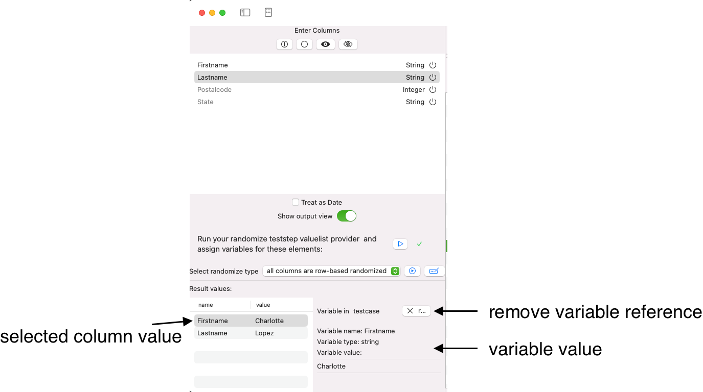
- The selected column value displays name and value of the randomized column.
- The button remove variable reference gives the option to configure a different variable reference by selecting the parent testcase, testset or repository and select one of their attached variables including creating a new variable.
- variable value displays the current value of the referenced variable. This should be same value as the randomized
Formatted value list preview
The formatted value list preview displays all rows in the CSV file with all shown columns and applied formatting for each column.
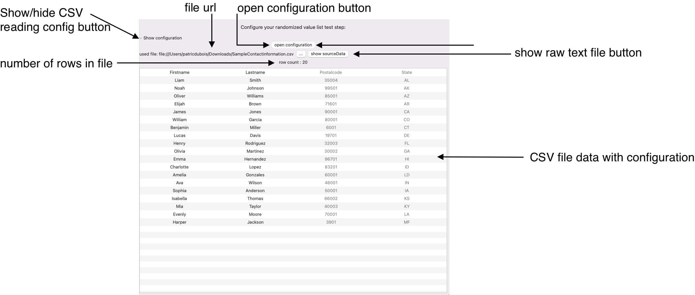
- Button Show/hide CSV reading config button (un)discloses a button to show the CSV reading configuration.
- open configuration button opens a dialog to configure the options when a CSV is read.
- file url: When you select a file from your desktop, the file url is stored. The file data is read and its contents are stored with the formatting options as separate information.
- Button source data reads the file url data and displays the data in text file view without overriding any column configurations.
- number of rows in file displays the number of rows applying the configuration option empty lines.
- CSV file data with configuration displays the formatted columns. Columns that are disabled are shown with the system' secondary color, this may be gray instead of black text color on your system.
CSV file reading options
A CSV file may have various textual representations. Depending on your output requirement you may need to modify the default values.
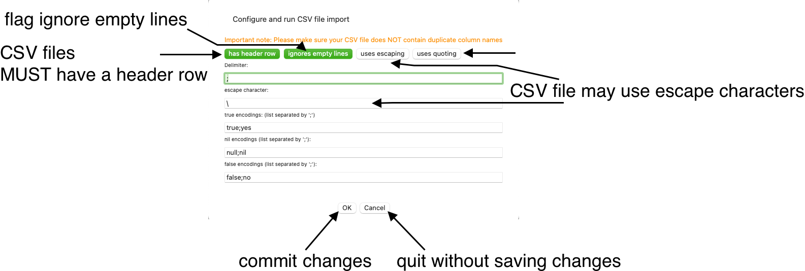
- You MUST provide row headers
- you may ignore empty lines, they will not appear as rows in the preview data list
- Your CSV file may use escaping, verify if the escape character fits
- Your CSV file may use quotes for your columns
- You may list a set of false encodings
- You may list a set of nil encodings
- You may list a set of true encodings
- OK saves your changes and dismisses the dialog
- Cancel flushes your changes and dismisses the dialog
HTTP Teststep assertion list
Testing webservices can become repetitive and cumbersome. Assertions help you to automate checks and free you from repetitive error-prone verifications. You will find more time to further explore responses and find unexpected behaviour. Assertions have their own tab in the HTTP Request view and allow you for editing assertions while viewing the Response.
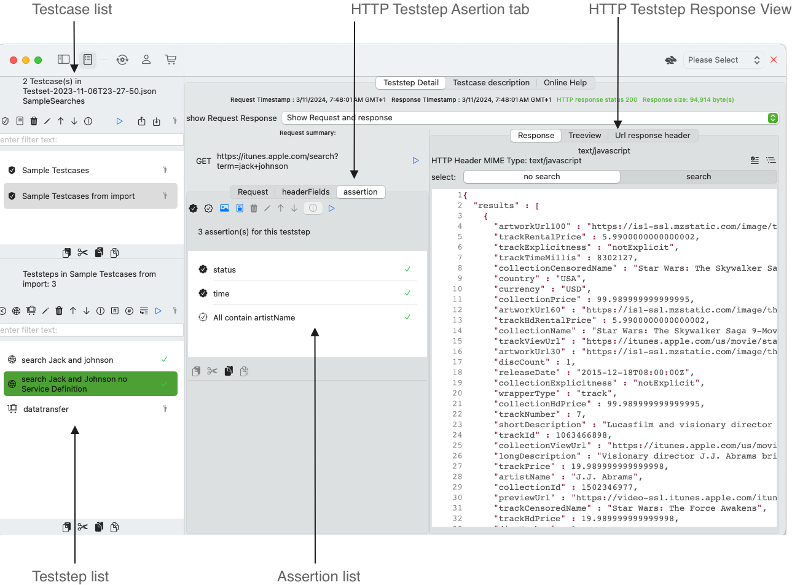
Assertions
Assertions help you to assess the validity of a teststeps output. APIJockey TEST provides a set of assertions types depending on the output type unter test.
Assertion list
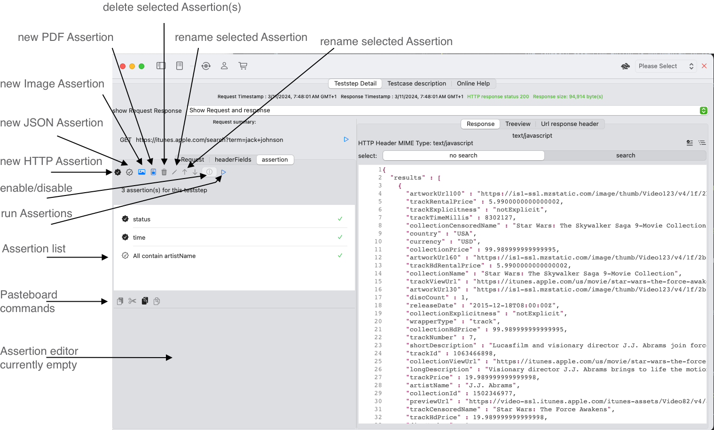
We discuss the list buttons in the order they appear in the view from left to right
- Create new HTTP assertion: See HTTP assertion editor
- Create new JSON assertion with JSONPath. See JSONPath assertion editor
- Create new Image Assertion. See AI based Image Assertions
- Create new PDF Assertion. See PDF Assertions
- Delete selected Assertion(s)
- Rename selected Assertion
- Move up selection in the list
- Move down selection in the list
- Enable/disable: An assertion will only be executed, if it is enabled. A disabled assertion appears with grey text color.
-
Run (selected assertion or all assertion): This button runs all selected elements in the order they appear. If no assertion is selected, the whole list will be run.
-
List of assertions with current result status
- Displays the name of the assertion and the result status
- Pasteboard commands
Assertion editor: Empty view in the screenshot, as no Assertion is selected in the list. See details for each type of assertion in the